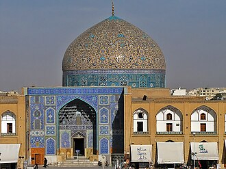

تعارف
La mosquée du Cheikh Lotfallah, ou Masjid-i Sadr, ou encore oratoire du roi est un édifice religieux élevé à Ispahan de 1598 à 1619), sous le règne des Séfévides. Il s'agit de la première mosquée érigée dans cette ville sous cette dynastie, avant la mosquée du Chah. Son chantier dura longtemps, seize ans selon les sources, et deux dates sont inscrites dans le décor : 1616 sur le dôme et 1618 dans le mihrab. Son architecte principal est Mohammad Reza Esfahani et le calligraphe Ali Riza-i Abbassi, qu'il faut distinguer du célèbre peintre, calligraphe et dessinateur Riza 'Abbasi actif à la même époque.
مسجد الشيخ لطف الله هو أحد مساجد مدينة أصفهان في إيران، يقع في الجانب الشرقي من ساحة نقش جهان مقابل قصر عالي قابو. يعتبر هذا المسجد من المساجد التاريخية المشهورة والمعروفه في المدينة. وتم بناء هذا المسجد بامر من الشاه الصفوي عباس الأول وذلك احتفاء منه بالشيخ لطف الله الميسي أحد علماء الدين الشيعة الإثنا عشرية انذاك، وقد استغرق بنائه ثمانية عشر سنة. وهو أحد الابنية التاريخية من القرن الحادي عشر الهجري.كما ان هذا المسجد مسجل ضمن لائحة مواقع التراث العالمي التي تدار من قبل منظمة اليونسكو.
The Sheikh Lotfollah Mosque is a Shi'ite mosque, located on the eastern side of Naqsh-e Jahan Square, Isfahan, Iran. Construction of the mosque started in 1011 AH (1602/1603 CE) and was finished in 1028 AH (1618/1619 CE). It is one of the masterpieces of Iranian architecture from the Safavid era. It was designed by the chief architect Muhammad Reza during the reign of Shah Abbas the Great. On the advice of Arthur Upham Pope, Reza Shah Pahlavi had the mosque restored in the 1920s.
Şeyh Lütfullah Camii,, İran'ın İsfahan kentinde bulunan bir camidir. Safevi Hanedanı döneminde Şah I. Abbas tarafından 1615 yılında inşa ettirilmiştir. 1618 yılında tamamlanan cami, Safevi mimarisinin en bilinen örneklerinden biridir.
Masjid Sheikh Lotfollah adalah sebuah masjid bergaya arsitektur Iran yang dibangun pada masa Kekaisaran Safawi. Lokasi Masjid Sheikh Lotfollah berada di sisi timur Alun-Alun Naqsh-i Jahan, Isfahan, Iran. Pembangunan masjid ini dimulai pada tahun 1603 dan selesai pada tahun 1619 pada masa pemerintahan Shah Abbas I dari Persia. Arsitek untuk Masjid Sheikh Lotfollah adalah Mohammadreza Isfahani. Atas saran Arthur Upham Pope, Reza Shah Pahlavi membangun kembali dan memperbaiki masjid pada tahun 1920-an.
شیخ لطف اللہ مسجد ایران کے صفوی دور کی عظیم تعمیرات میں سے ایک ہے جو اصفہان کے معروف میدان نقش جہاں کے مشرقی جانب واقع ہے۔
La mezquita del jeque Lotf Allah o el oratorio del Shah, es una de las mejores obras de la cultura iraní, fue construida cuando aún prevalecía la dinastía safávida. Está situada en el lado este de la plaza de Naghsh-i Jahan en Isfahán, Irán.
La Moschea dello sceicco Loṭfollāh è uno dei capolavori architettonici safavidi in Iran, che sorge sul lato orientale della Piazza Naqsh-e jahān di Iṣfahān, Iran.
De Sjeik Lutfahllahmoskee is een moskee in de Iraanse stad Isfahan. De moskee is gelegen aan het plein van de Emam.
셰이크로트폴라 모스크(페르시아어: مسجد شیخ لطفالله)는 왕궁 알리 카푸(Ali Qapu)와 바로 마주하고 있는 아름다운 사원으로 1602년 아바스 1세가 그의 장인이며 시아파 지도자 중 한 사람인 셰이크 로트폴라(Sheikh Lotfollah)를 위해 만들었다. 이후 이맘 광장을 만들 때까지 왕족을 위해 사용했다. 아름답게 장식된 사원의 타일 장식은 눈을 뗄 수가 없을 정도이다. 돔의 엷은 파란 타일도 시간에 따라, 빛에 따라 멋지게 변화하며 그 아름다움을 더한다. 공사 기간만 20년 걸렸다고 하며 첨탑이나 정원이 없는 점이 다른 사원과 다른 점인데 오랜 왕조 시절 여자 왕족을 위한 시설이라고 한다. 일반인에게 얼굴이 보이지 않게 기도에 참석하도록 궁전과 사원을 연결하는 지하 터널을 만들어 출입하였다고 한다.
Мече́ть ше́йха Лотфаллы́ — крупнейшая мечеть Исфахана, одна из крупнейших мечетей Ирана и мира, расположенная на востоке площади Накш-э Джахан, в центре города Исфахан. Является одним из ярчайших примеров персидской архитектуры, в частности исфаханской школы. Один из объектов Всемирного наследия ЮНЕСКО в Иране, в составе площади Накш-э Джахан и расположенных на ее территории архитектурных памятников.
Schejk Lutfullahs moské ligger på den östra sidan av Naqsh-e Jahantorget i staden Esfahan. Man började bygga moskén år 1602 e.Kr. ovanpå ruinerna av en äldre moské och den nya moskén stod färdig 1619.
Moscheea lui Lotfollah este o moschee din orașul Isfahan, din Iran. Ea este una dintre cele mai cunoscute moschei din oraș și una dintre cele mai celebre din țară.
نقشے پر
دستاویزات اور لنکس
- Wikipédia — Français
- Wikipédia — العربية
- Wikipédia — English
- Wikipédia — Türkçe
- Wikipédia — Bahasa Indonesia
- Wikipédia — اردو
- Wikipédia — Español
- Wikipédia — Italiano
- Wikipédia — Nederlands
- Wikipédia — 中文
- Wikipédia — 한국어
- Wikipédia — Русский
- Wikipédia — Svenska
- Wikipédia — Română
- Wikidata — Q856356
ڈیٹا: Wikidata (CC0)، ہر 3 ماہ بعد تازہ کیا جاتا ہے۔ سال عمارت کی معلوم قدیم ترین تاریخِ تعمیر ہے: جو عمارت بعد میں مسجد بنی (جیسے آیا صوفیہ)، اس کے لیے اصل عمارت کا سال دیا گیا ہے۔ تصاویر: Wikimedia Commons، ہر تصویر کے صفحے پر مصنف اور لائسنس۔